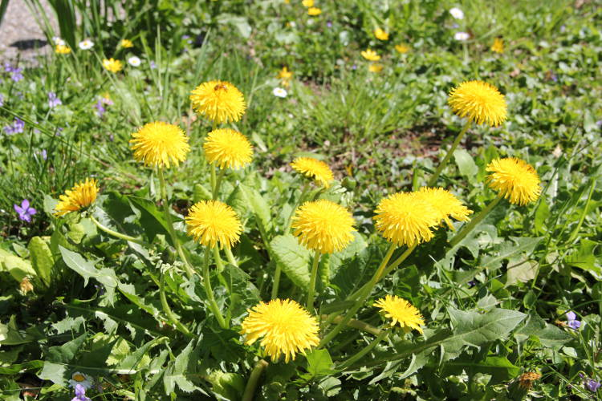

La phytothérapie est une méthode thérapeutique préventive et curative, qui utilise les plantes en tisanes, en teintures mères et en macérats glycérinés de bourgeons ou de jeunes pousses.
Cette médecine par les plantes remonte à la nuit des temps. Elle est largement remise à l’honneur en notre époque de chimiothérapie, car elle a l’immense avantage d’être efficace et non nocive. Cependant, de nombreuses plantes sont toxiques à haute dose et peuvent perturber le métabolisme si elles ne sont pas prescrites ou utilisées avec précision.
L’extrême diversité et l’extrême richesse de la flore indigène et exotique permettent au thérapeute de jouer sur un clavier multiple et diversifié, sans cesse élargi par la mise en évidence de plantes nouvellement admises dans la thérapeutique, ou de nouvelles propriétés pharmacologiques découvertes chez des plantes depuis longtemps utilisées.
La conjonction des retombées de l’abus des médicaments chimiques, des courants écologiques et des aspirations des populations occidentales à une vie plus saine aboutissent à une augmentation considérable de la consommation de remèdes à base de plantes.
La phytothérapie n’est donc pas seulement la méthode de soins de nos ancêtres ; c’est une connaissance complexe des propriétés des plantes, des méthodes de cueillettes, de préparations, de posologie de prescriptions. Sans prétendre être universelle, elle peut répondre à la nécessité de soins pour pratiquement toutes nos maladies. Elle mérite bien sa place aux côtés de l’homéopathie, de l’aromathérapie et de l’oligothérapie, comme elle est un des piliers de toutes les médecines, chinoise, ayurvédique, anthroposophique, etc.
La phytothérapie confronte l’individu à son environnement vivant.
